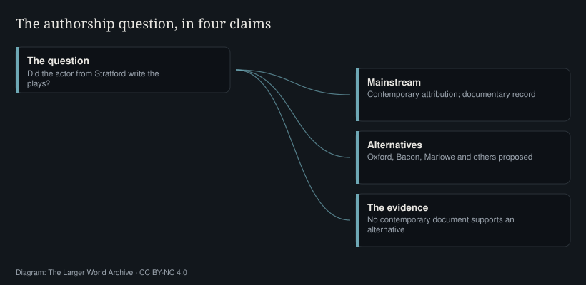

The question
William Shakespeare of Stratford-upon-Avon — actor, shareholder in the Lord Chamberlain's Men, son of a glove-maker — is credited on the title pages of the plays published in his lifetime, and named by contemporaries as their author. The "authorship question" holds that this is a front, and that the real author was someone with the education, travel and court connections the plays seem to require.
Maps, diagrams and images

The candidates have included Francis Bacon, Christopher Marlowe (dead in 1593, which requires a conspiracy of remarkable efficiency), Edward de Vere the 17th Earl of Oxford (dead in 1604, which requires plays written after his death), the 6th Earl of Derby, and Mary Sidney.
What the evidence actually is
- Title pages. Printed plays of the period name "William Shakespeare" as author. Attribution in the theatre was a commercial matter, not a secret.
- Contemporary testimony. Ben Jonson's poem in the First Folio (1623) addresses Shakespeare directly; the Folio's editors were his fellow actors, who had performed the plays.
- Local documents. Stratford records, the purchase of New Place, a share in the Globe's tithes, the 1616 will, the monument — an ordinary successful professional life, documented in the way such lives were.
- Stylometry. Computational analyses of function words, verse habits and spelling patterns consistently cluster the canon with Shakespeare and not with the candidates. Modern studies also show collaboration — with Fletcher, Middleton, Peele — which is exactly what a working playwright's career looks like.
- Hand D. The manuscript of Sir Thomas More contains three pages in a hand that palaeographers identify as Shakespeare's, writing a scene of the kind the canon contains.
It began as an argument from class. Delia Bacon's 1857 book assumed a Stratford tradesman could not have the learning on display. That assumption is the engine of the whole tradition, and it has not aged well.
It is unfalsifiable in the direction it needs. Any document naming Shakespeare is explained as part of the cover; any gap in his biography is explained as proof. That is the same structure as phantom time.
It is more interesting than the truth. A nobleman with a secret is a better story than a jobbing actor who wrote fast, collaborated, and made money — which is what the record shows.
Where the sceptics have a fair point
We do not have a single surviving literary manuscript of a Shakespeare play in his hand, and the biographical record is thin by modern standards. That is a real gap and worth saying plainly. It is also true of almost every playwright of the period — the theatre was a collaborative, disposable business, and paper was reused.
The honest statement is: the evidence is strong, documentary and convergent, and it does not depend on trusting a single source. That is more than can be said for any of the alternatives.
Sources for this page
- Shakespeare Documented — primary documents, transcripts and imagesfolger.edu
- Folger Shakespeare Library, “Shakespeare authorship question” resourcesfolger.edu
- Wikipedia, “Shakespeare authorship question” — candidates and evidenceen.wikipedia.org
- Taylor & Egan, The New Oxford Shakespeare: Authorship Companion (2017)oup.com
Open resources on this topic
- BookWho wrote Shakespeare? "Aye, there's the rub." — Henderson, William · 1887 (Internet Archive, free to read)
- BookWho wrote Shakespeare? 'Aye, there's the rub." — ['Henderson, William, 1813-1891', 'Lyall, Charles, ill'] · 1887 (Internet Archive, free to read)
- BookWho Wrote Shakespeare — Unka Sacjo · 2026 (Internet Archive, free to read)
- PapersOpen-access articles: DOAJ · PubMed Central · Internet Archive Scholar
- BooksPublic-domain and borrowable copies: Open Library · Project Gutenberg · Google Books
Cite this page
Momin, S. (2026). Who Wrote Shakespeare?. The Larger World Archive. https://drsamonline.github.io/LARGE_GLOBE/shakespeare-authorship.htmlMomin, Sohil. “Who Wrote Shakespeare?.” The Larger World Archive, 2026, https://drsamonline.github.io/LARGE_GLOBE/shakespeare-authorship.html.Momin, Sohil. “Who Wrote Shakespeare?.” The Larger World Archive, 2026. https://drsamonline.github.io/LARGE_GLOBE/shakespeare-authorship.html.@misc{who2026shakespeare,
author = {Momin, Sohil},
title = {Who Wrote Shakespeare?},
year = {2026},
howpublished = {The Larger World Archive},
url = {https://drsamonline.github.io/LARGE_GLOBE/shakespeare-authorship.html},
note = {Last reviewed 20 November 2026}
}Last reviewed 20 November 2026 · Corrections policy · this page is not peer reviewed